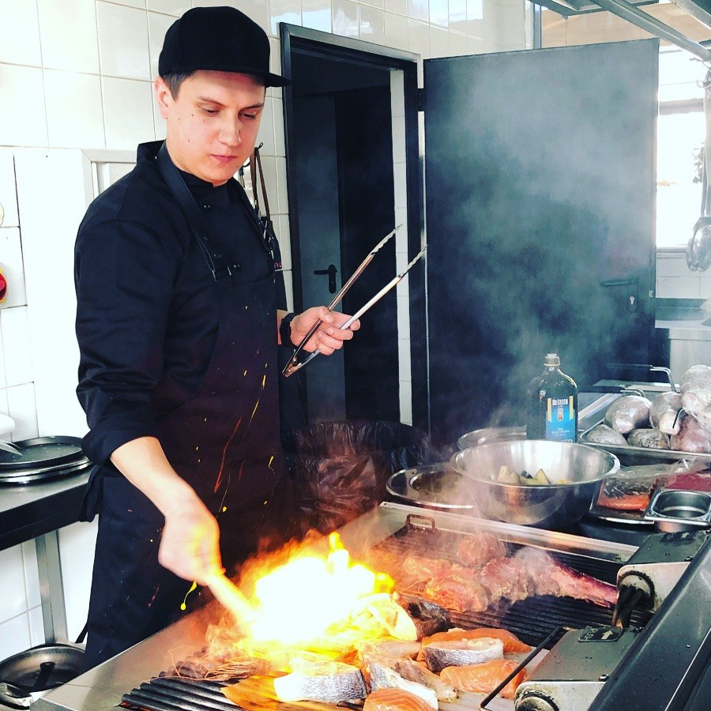
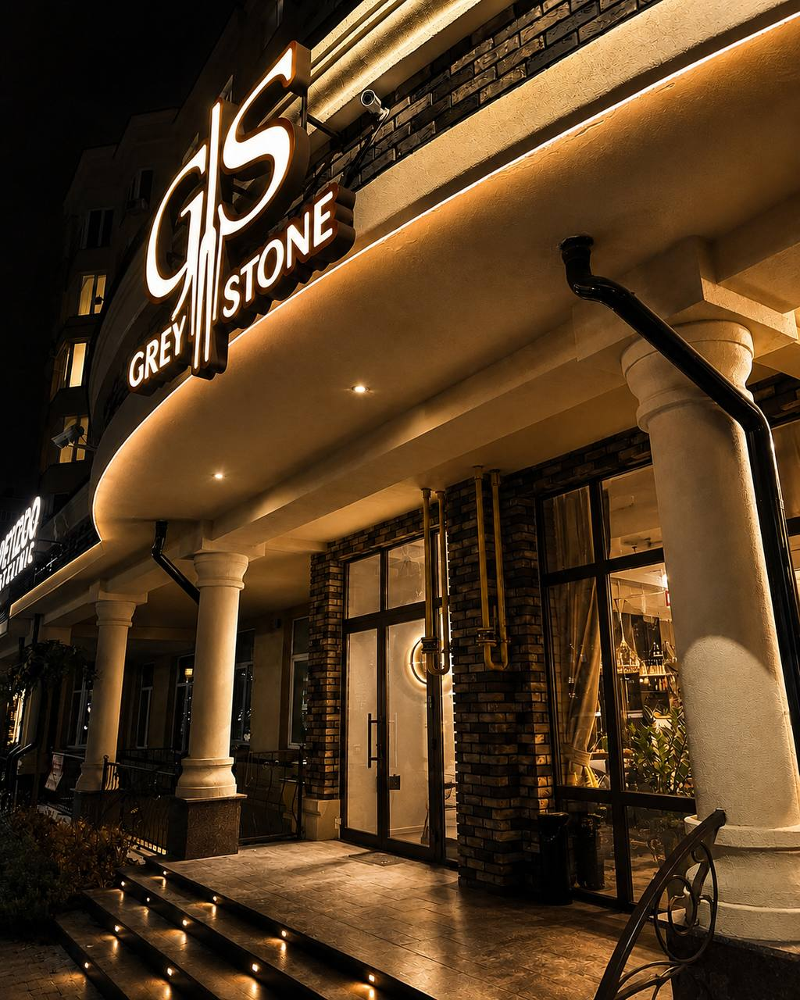
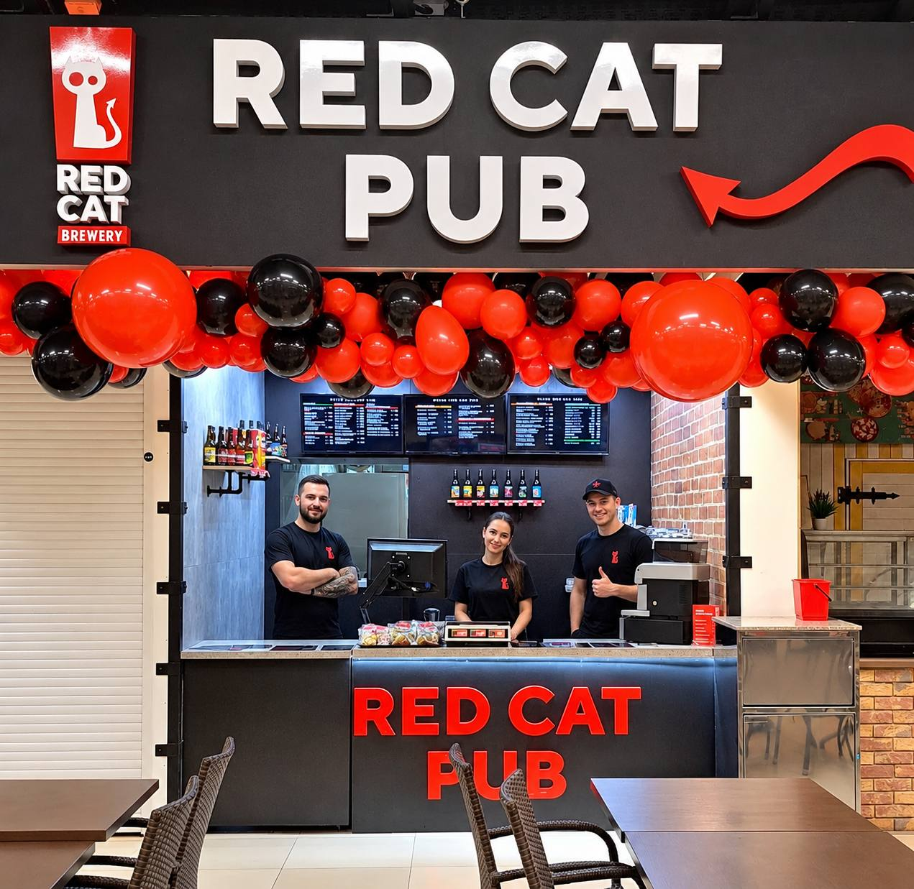

Хочете свій заклад? Наші вже працюють, і ми знаємо, як відкрити ваш
- Під ключ за 1,5–3 місяці
- Відкриті ціни на послуги
- По всій Україні
 Дмитро Барсуков бренд-шеф і засновник бюро
Дмитро Барсуков бренд-шеф і засновник бюро
20+ закладів уже працюють
02Ваша ситуація
З чого ви починаєте?
Оберіть свою ситуацію - і форма заявки внизу вже знатиме, з чого почати.
-
01Старт з нуля
Хочу перший заклад
Є ідея і бюджет, але немає досвіду в ресторанному бізнесі.
- Рахуємо, чи зійдеться бюджет
- Беремо на себе всі етапи, рішення лишаються за вами
- Навчаємо команду ще до відкриття
-
02Є площа
Є приміщення
Площа вже є, але незрозуміло, який заклад там спрацює.
- Аналізуємо локацію та аудиторію
- Підбираємо формат під приміщення
- Відкриваємо заклад під цю площу
-
03Перезапуск
Заклад працює, але не так
Гості є, а результату, на який розраховували, немає.
- Оновлюємо меню й техкарти
- Переглядаємо концепцію
- Робимо ребрендинг або перезапуск
-
04Розширення
Хочу ще один заклад
Перший уже працює, і хочеться розширитися.
- Рахуємо нову локацію і бюджет
- Такий самий формат або новий
- Ви не відриваєтесь від першого закладу

03Про шефа
Заклад вам відкриває
шеф‑практик, а не франшиза
Дмитро Барсуков, бренд-шеф і засновник бюро
Сам щодня керую рестораном, який відкрив з нуля
і який працює вже два роки.
Тому знаю, що має працювати в закладі з першого дня,
а не тільки гарно виглядати на відкритті.
- з 2012 у громадському харчуванні
- 20+ закладів відкрив і перезапустив по всій Україні
- Red Cat Brewery бренд-шеф запуску кухні мережі, Харків
- технолог диплом технолога харчової промисловості, закордонна практика
Для мене відкриття закладу - це не просто черговий проєкт. Це моя репутація. Тому я вкладаю душу в кожну деталь і відповідаю за результат.
Франшиза чи свій заклад?
Поверніть ключ і подивіться різницю
- Бренд і меню Чужі, за стандартами мережіВаші, під вашу ідею
- Постачальники Визначає мережаОбираєте ви, ми допомагаємо підібрати
- Хто веде запуск Менеджер франшизиШеф, який сам працює в ресторані
- Свобода змін Обмежена договоромЗмінюєте меню, ціни й оформлення, коли вважаєте за потрібне
04Під ключ
Що ви отримуєте на кожному етапі
Від ідеї до першого гостя. Вам не треба шукати і зводити між собою десяток підрядників:
проєкт веду я, а кожен етап закриваємо з командою.
-
01
Приміщення і розрахунки
Знаходимо або перевіряємо приміщення, дивимось на локацію й аудиторію, складаємо бізнес-план. Ви бачите цифри до того, як вкладати в ремонт.
-
02
Концепція і дизайн
Придумуємо концепцію й назву, робимо дизайн і стежимо на ремонті, щоб вийшло як на проєкті.
-
03
Обладнання й постачальники
Підбираємо обладнання під ваше меню і постачальників. Є свої - працюємо з ними.
-
04
Кухня і меню
Меню і технологічні карти, щоб кожна страва виходила однаковою, хто б не стояв на кухні. Упаковка й уніформа.
-
05
Команда
Підбираємо персонал і навчаємо до відкриття: кухню - працювати за техкартами, зал - з гостями.
-
06
Запуск
Допомагаємо з документами, налаштовуємо касу й облік, готуємо просування. Перший робочий день проходимо разом.
Не потрібен весь пакет?
Можна замовити окремі послуги:
наприклад, меню й техкарти або перезапуск діючого закладу.
05Кейси
Заклади, які вже працюють
Два - мій власний досвід, два - проєкти клієнтів.
Гортайте вбік
-

Власний досвідРесторан Grey Stone
Софіївська Борщагівка.
Відкрив з нуля і керую ним досі. -

Власний досвідRed Cat Pub
Харків: ТРЦ «Французький бульвар», Сумська, ХТЗ.
Запуск кухні як бренд-шеф мережі. -
 Проєкт клієнта
Проєкт клієнтаEat it
Заклад молодіжного формату при житловому комплексі.
-
 Проєкт клієнта
Проєкт клієнтаГотові страви поруч
Корисні домашні страви на щодень.
06Як це буде
Що буде після вашої заявки
Зустріч і консультація
Розповідаєте про ідею, бюджет і очікування. Я скажу, що з цього реально і що варто змінити.
Первинний розрахунок
Отримуєте розрахунок: скільки коштуватиме заклад і наші послуги, плюс бізнес-план.
Договір
Фіксуємо обсяг робіт, вартість і терміни. Після підпису стартуємо.
-
Аналіз вашого приміщення
Перевіряємо приміщення, локацію та аудиторію під ваш формат.
Концепція, дизайн, меню
Погоджуєте назву, дизайн-проєкт і меню, перш ніж ми рухаємось далі.
Ремонт, обладнання, команда
Ремонт іде під нашим контролем, паралельно закуповуємо обладнання і готуємо команду.
Відкриття
Заклад приймає перших гостей, а я на місці.
Місяць супроводу
Перший місяць допомагаємо налагодити роботу.
Від договору до відкриття зазвичай 1,5–3 місяці.
Великі проєкти займають більше.
07Вартість
Вартість послуг - відкрито, ще до розмови
Ціна залежить від площі закладу.
Це орієнтир: точну суму назву після знайомства з вашим проєктом.
А скільки коштує сам заклад?
Залежить від формату, стану приміщення й обладнання.
Орієнтовний бюджет назву на першій консультації.
Працюємо за договором
Співпраця починається з договору, а не з усних домовленостей.
Одна відповідальна людина
Усі питання - до мене, а не до десятка підрядників.
Місяць супроводу
Після відкриття не зникаємо: перший місяць допомагаємо налагодити роботу.
3 300 у.о.
вартість послуг «під ключ»
Обрали не все? Окремі послуги порахую після розмови
Під ключ вигідніше: усі 12 послуг уже в пакеті за 3 300 у.о.
- до 20 м²2 800 у.о.
- 20–40 м²3 300 у.о.
- 40–60 м²3 600 у.о.
- 60–80 м²4 800 у.о.
- понад 80 м²індивідуально
08Питання
Про що питають перед стартом
Скільки коштує відкрити заклад повністю?
Залежить від формату, площі, стану приміщення і обладнання.
Ціни на мої послуги - в калькуляторі вище, орієнтовний бюджет на сам заклад назву після першої розмови.
Скільки часу займає відкриття?
Зазвичай від 1,5 до 3 місяців.
Якщо проєкт великий, довше: термін фіксуємо після розрахунку.
У мене немає приміщення. Ви допоможете?
Так. Підбираємо приміщення, аналізуємо локацію та аудиторію і рахуємо, чи підходить воно під ваш формат.
Обладнання треба купувати тільки у вас?
Ні.
Можемо підібрати обладнання і постачальників, а можемо працювати з вашими.
Допомагаєте з документами?
Так, допомагаємо з документами для запуску.
Що саме потрібно для вашого формату, розповімо на консультації.
Що буде після відкриття?
Перший місяць допомагаємо налагодити роботу, і я лишаюся на зв'язку.
У мене вже є заклад, але він не працює як треба. Візьметеся?
Так, перезапускаємо діючі заклади: оновлюємо меню, концепцію, робимо ребрендинг або доводимо окремий напрям роботи.
Можна замовити тільки меню чи окрему послугу?
Так. Наприклад, меню й техкарти або перезапуск діючого закладу.
Вартість окремих послуг рахую після розмови.
Не знайшли відповіді?
Напишіть мені, відповім особисто.
09Заявка
Розкажіть про свій заклад
Кілька коротких питань, і я підготую попередній розрахунок. Те, що ви вже обрали на сайті, тут заповнено.
Зручніше написати? Telegram